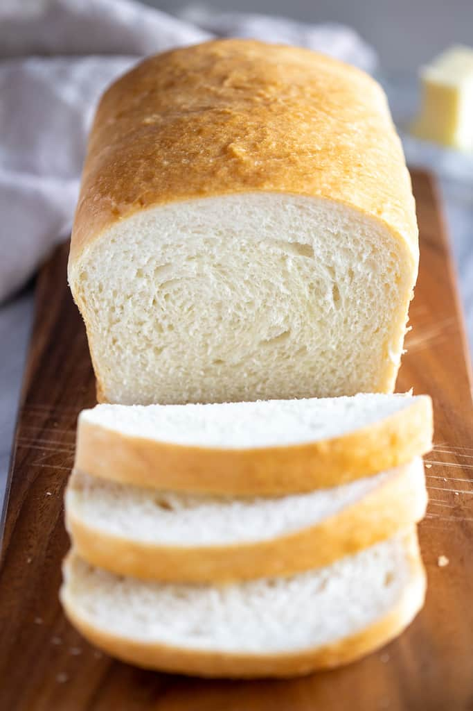
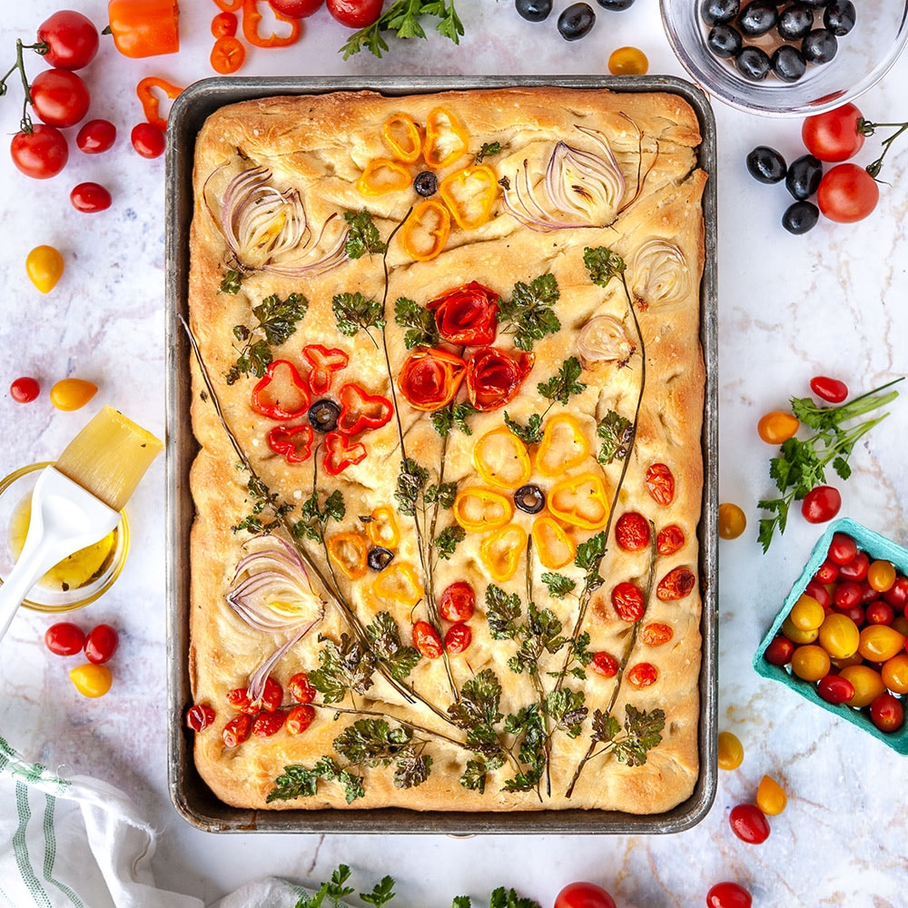
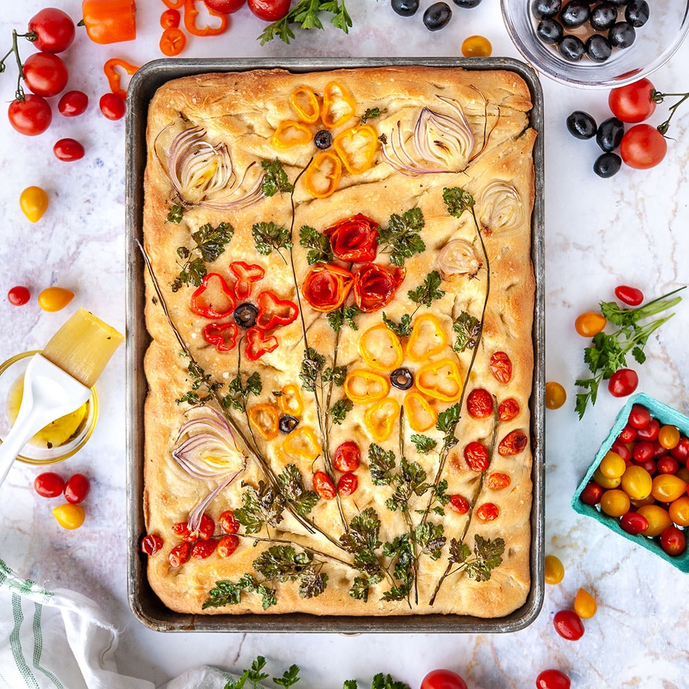

Bread.
A header about bread.

 

External links with info about bread.
All about bread
Focaccia bread
Sourdough information
What do we know about bread?
Bread is a staple for most of us in some form. There are many forms of bread available. As Ramona Flowers once said, "Bread makes you fat." Is it delicicous? Yes.
Everyone agrees, it's the key to achieving happiness.
“There is not a thing that is more positive than bread.”
– Fyodor Dostoevsky
Top 5 tastiest breads
- Cheesy bread
- Rolls
- Banana bread
- Texas toast
- Pumpernickel
Unfamiliar Breads:
- Zopf
- Zwieback
- Ttongppang
- Sgabeo
- Rugbrød